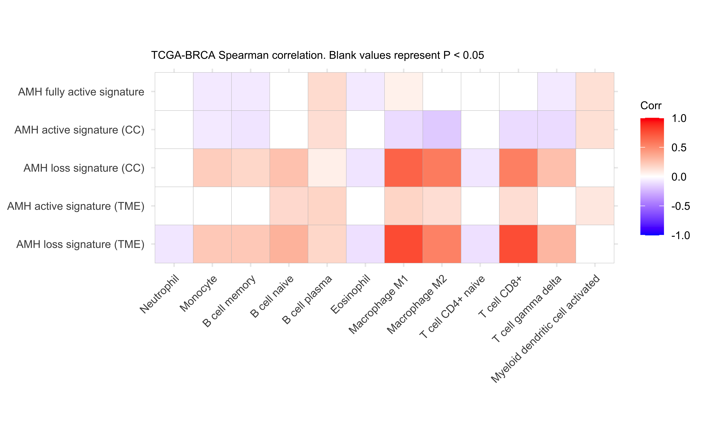
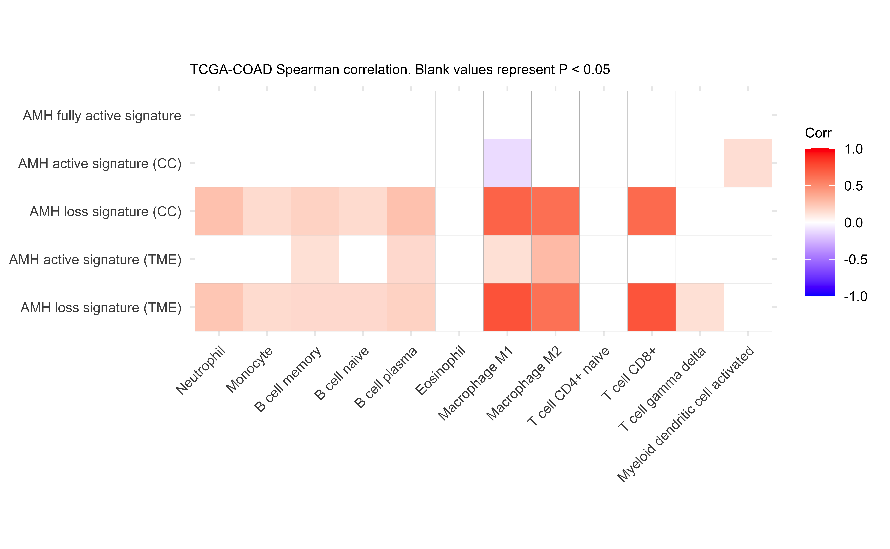
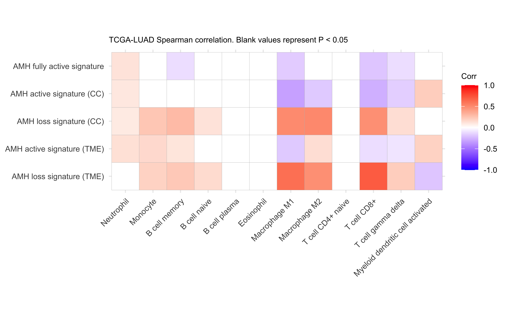

Last updated: 2025-07-01
Checks: 7 0
Knit directory: saini-stealTHY/
This reproducible R Markdown analysis was created with workflowr (version 1.7.1). The Checks tab describes the reproducibility checks that were applied when the results were created. The Past versions tab lists the development history.
Great! Since the R Markdown file has been committed to the Git repository, you know the exact version of the code that produced these results.
Great job! The global environment was empty. Objects defined in the global environment can affect the analysis in your R Markdown file in unknown ways. For reproduciblity it’s best to always run the code in an empty environment.
The command set.seed(20240517) was run prior to running
the code in the R Markdown file. Setting a seed ensures that any results
that rely on randomness, e.g. subsampling or permutations, are
reproducible.
Great job! Recording the operating system, R version, and package versions is critical for reproducibility.
Nice! There were no cached chunks for this analysis, so you can be confident that you successfully produced the results during this run.
Great job! Using relative paths to the files within your workflowr project makes it easier to run your code on other machines.
Great! You are using Git for version control. Tracking code development and connecting the code version to the results is critical for reproducibility.
The results in this page were generated with repository version 2d1b5a6. See the Past versions tab to see a history of the changes made to the R Markdown and HTML files.
Note that you need to be careful to ensure that all relevant files for
the analysis have been committed to Git prior to generating the results
(you can use wflow_publish or
wflow_git_commit). workflowr only checks the R Markdown
file, but you know if there are other scripts or data files that it
depends on. Below is the status of the Git repository when the results
were generated:
Ignored files:
Ignored: .DS_Store
Ignored: .Rhistory
Ignored: .Rproj.user/
Ignored: analysis/.DS_Store
Ignored: code/.DS_Store
Ignored: code/raw_data_processing/rnaseq/p27851_o32062/pipelines/
Ignored: configuration/.DS_Store
Ignored: data/.DS_Store
Ignored: data/crispr/
Ignored: data/resources/
Ignored: data/rnaseq/
Ignored: output/.DS_Store
Ignored: output/clinical/
Ignored: output/crispr/
Ignored: output/rnaseq/
Untracked files:
Untracked: analysis/crispr-hsapiens_2180_sgRNA_r1.Rmd
Untracked: analysis/crispr-mm_2215_sgRNA-CMT167-LLC1-CT26.Rmd
Untracked: analysis/crispr-mm_2215_sgRNA-clonality_r1.Rmd
Untracked: analysis/crispr-mm_2215_sgRNA-r2oD_r1.Rmd
Untracked: analysis/crispr-muller-mm_2215_sgRNA.Rmd
Untracked: analysis/rnaseq-amhr2_ko-deg.Rmd
Untracked: analysis/templates/
Untracked: code/R-functions/subchunkify.R
Unstaged changes:
Modified: .gitignore
Modified: analysis/crispr-hsapiens_2180_sgRNA.Rmd
Modified: analysis/crispr-mm_2215_sgRNA-StealTHY.Rmd
Modified: analysis/crispr-mm_2215_sgRNA-clonality.Rmd
Modified: analysis/crispr-mm_2215_sgRNA-r2oC.Rmd
Modified: analysis/rnaseq-tumor-bulk.Rmd
Modified: analysis/rnaseq-tumor-facs-cancer.Rmd
Modified: analysis/rnaseq-tumor-facs-immune.Rmd
Modified: code/R-functions/gse_report.r
Modified: configuration/rmarkdown/ggplot_theme.R
Modified: update_workflowr.R
Note that any generated files, e.g. HTML, png, CSS, etc., are not included in this status report because it is ok for generated content to have uncommitted changes.
These are the previous versions of the repository in which changes were
made to the R Markdown
(analysis/tcga_immune_infiltrate_amhr2_ko_signatures.Rmd)
and HTML
(docs/tcga_immune_infiltrate_amhr2_ko_signatures.html)
files. If you’ve configured a remote Git repository (see
?wflow_git_remote), click on the hyperlinks in the table
below to view the files as they were in that past version.
| File | Version | Author | Date | Message |
|---|---|---|---|---|
| Rmd | 2d1b5a6 | Francesc Castro-Giner | 2025-07-01 | add tcga analysis |
Setup environment
knitr::opts_chunk$set(results='asis', echo=TRUE, message=FALSE, warning=FALSE, error=FALSE, fig.align = 'center', fig.width = 3.5, fig.asp = 0.618, dpi = 600, dev = c("png", "pdf"), engine.opts = list(bash = "-l"))
options(stringsAsFactors = FALSE)
use_seed <- 1100101
set.seed(use_seed)
dir.create(params$output_dir, recursive = TRUE, showWarnings = FALSE)Load packages
library(tidyverse)
library(knitr)
# library(showtext)
library(foreach)
library(SummarizedExperiment)
# library(survival)
# library(gtsummary)
# library(ggsurvfit)
# library(survminer)
# library(meta)
library(magrittr)
# library(DT)
# library(colorblindr)
# library(ggdendro)
# library(RColorBrewer)
# library(circlize)
# library(Hmisc)
# library(ComplexHeatmap)
# library(ineq)
library(kableExtra)
library(openxlsx)
# library(magrittr)
# library(ggrepel)
# library(ggpubr)
# library(ggbeeswarm)
# library(ggridges)
# library(openxlsx)
# library(MAGeCKFlute)
library(GSVA)
library(tldr)
library(ggcorrplot)Load ggplot theme
source("./configuration/rmarkdown/ggplot_theme.R")
source("./configuration/rmarkdown/color_palettes.R")Clean files generated in previous runs
rmd_file <- current_input()
if(!is.null(rmd_file)) {
figures_dir <- file.path('./docs/figure',rmd_file)
if(dir.exists(figures_dir)) {
unlink(file.path(figures_dir, "*"))
}
}Load data
# Load DGE results
dge_list <- readRDS('./output/rnaseq/amhr2_ko/dge-edgeR_QLF.rds')
# Select comparisons
use_comp <- c("i_AMHR2_KO-o-i_ctrl_sgRNA", "c_AMHR2_KO-o-c_AMHR2_ctrl", "AMHR2_KO-o-ctrl")
dge_list <- dge_list[use_comp]Extract top-100 genes for each comparison and direction (up, down) based on FDR and FC
i <- dge_list[[1]]
dge_up_fdr <- foreach(i = dge_list) %do% {
i$results %>%
filter(FDR < 0.001) %>%
filter(logFC > 1) %>%
arrange(FDR) %>%
head(100) %>%
pull(gene_name)
}
names(dge_up_fdr) <- names(dge_list) %>% gsub(".o.*", "", .) %>% paste0("up_fdr_", .)
i <- dge_list[[1]]
dge_down_fdr <- foreach(i = dge_list) %do% {
i$results %>%
filter(FDR < 0.001) %>%
filter(logFC < -1) %>%
arrange(FDR) %>%
head(100) %>%
pull(gene_name)
}
names(dge_down_fdr) <- names(dge_list) %>% gsub(".o.*", "", .) %>% paste0("down_fdr_", .)
i <- dge_list[[1]]
dge_up_fc <- foreach(i = dge_list) %do% {
i$results %>%
filter(FDR < 0.001) %>%
filter(logFC > 1) %>%
arrange(desc(logFC)) %>%
head(100) %>%
pull(gene_name)
}
names(dge_up_fc) <- names(dge_list) %>% gsub(".o.*", "", .) %>% paste0("up_fc_", .)
i <- dge_list[[1]]
dge_down_fc <- foreach(i = dge_list) %do% {
i$results %>%
filter(FDR < 0.001) %>%
filter(logFC < -1) %>%
arrange(logFC) %>%
head(100) %>%
pull(gene_name)
}
names(dge_down_fc) <- names(dge_list) %>% gsub(".o.*", "", .) %>% paste0("down_fc_", .)
dge_signatures_mm <- c(dge_up_fdr, dge_down_fdr, dge_up_fc, dge_down_fc)Convert to genes to from mouse to human orthologs
library(biomaRt)
use_mart <- useMart("ensembl", dataset = "mmusculus_gene_ensembl")
attributes<- c("external_gene_name",
"hsapiens_homolog_ensembl_gene",
"hsapiens_homolog_associated_gene_name",
"hsapiens_homolog_orthology_type",
"hsapiens_homolog_perc_id_r1")
orth_info <- getBM(attributes, filters="with_hsapiens_homolog",
values=TRUE, mart = use_mart, uniqueRows=TRUE)
i <- dge_signatures_mm[[1]]
dge_signatures <- foreach(i = dge_signatures_mm) %do% {
orth_info %>% filter(external_gene_name %in% i) %>% pull(hsapiens_homolog_associated_gene_name)
}
names(dge_signatures) <- names(dge_signatures_mm)
saveRDS(dge_signatures, file = file.path(params$output_dir, 'dge_signatures.rds'))Load signatures
dge_signatures <- readRDS(file.path(params$output_dir, 'dge_signatures.rds'))Change signature names to more readable format
new_signature_names <- c(
up_fc_i_AMHR2_KO = 'AMH loss signature (TME)',
up_fc_AMHR2_KO = 'AMH loss signature (CC)',
down_fc_i_AMHR2_KO = 'AMH active signature (TME)',
down_fc_AMHR2_KO = 'AMH active signature (CC)',
down_fc_c_AMHR2_KO = 'AMH fully active signature'
)
#
# dge_signatures <- dge_signatures[names(new_signature_names)]
# names(dge_signatures) <- new_signature_namesDefine genes and TCGA projects
## Defines genes and signatures
selected_signatures <- dge_signatures
## Define TCGA projects
project_id <- list.files(
path = params$data_dir,
pattern = 'TCGA-[A-Z]+.rds$'
) %>%
gsub(".rds", "", .)
use_projects <- c('BRCA', 'LUAD', 'COAD') %>%
paste('TCGA', ., sep = '-')
project_id <- intersect(project_id, use_projects)Load Immune Infiltration from TIMER2.0
immune_infiltration_estimation <- read_csv(params$infiltration_estimation) %>%
dplyr::rename(sampleID = cell_type)For each study, we analyse: - the Spearman’s correlation of individual genes and signatures with the cell type scores - the association between quantiles of gene expression and signature scores
i <- project_id[1]
data_processed <- foreach(i = project_id) %do%{
se <- readRDS(file.path(params$data_dir, paste0(i, '.rds')))
# Select primary tumor samples and samples used in the Immune Infiltration file
sample_annot <- colData(se) %>% data.frame %>%
filter(sample_type == 'Primary Tumor') %>%
filter(sampleID %in% immune_infiltration_estimation$sampleID)
se <- se[, rownames(sample_annot)]
colData(se) <- DataFrame(sample_annot)
# Calculate log2CPM
assay(se, 'cpm') <- edgeR::cpm(assay(se, 'normcounts'), log = TRUE)
gsvapar <- gsvaParam(
assay(se, 'cpm'),
selected_signatures,
kcdf = "Gaussian",
maxDiff = TRUE
)
gsva_res <- gsva(gsvapar,
verbose = FALSE) %>%
t()
# Filter immune infiltrate data
use_imm_est <- immune_infiltration_estimation %>%
filter(sampleID %in% colnames(se)) %>%
column_to_rownames('sampleID')
# Generate correlation matrix
use_mat <- cbind(
gsva_res[colnames(se),],
use_imm_est[colnames(se,),]
)
corr <- round(cor(use_mat, method = 'spearman'), 2)
p.mat <- cor_pmat(use_mat, method = 'spearman')
corr <- corr[names(selected_signatures), colnames(use_imm_est)]
p.mat <- p.mat[names(selected_signatures), colnames(use_imm_est)]
# Generate correlation data.frame
corr_df <- corr %>% data.frame(check.names = FALSE) %>%
rownames_to_column('gene') %>%
pivot_longer(-gene, names_to = 'cell_type', values_to = 'corr')
p.mat_df <- p.mat %>% data.frame(check.names = FALSE) %>%
rownames_to_column('gene') %>%
pivot_longer(-gene, names_to = 'cell_type', values_to = 'p.val')
corr_df %<>%
left_join(p.mat_df, by = c('gene', 'cell_type'))
# Set quantiles
quantile_df <- apply(gsva_res, 2, function(x){cutp(x, p=c(0.33, 0.66), labels=c('T1', 'T2', 'T3'))}) %>%
set_rownames(colnames(se)) %>%
data.frame(check.names = FALSE) #%>%
# rownames_to_column('sampleID') %>%
# pivot_longer(-sampleID, names_to = 'gene', values_to = 'quantile') %>%
# # Add immune infiltration scores
# left_join(use_imm_est %>% rownames_to_column('sampleID'), by = 'sampleID') %>%
# pivot_longer(-c(sampleID, gene, quantile), names_to = 'cell_type', values_to = 'score')
# Comparing scores between terciles
x <- quantile_df %>%
rownames_to_column('sampleID') %>%
# pivot_longer(-sampleID, names_to = 'gene', values_to = 'quantile') %>%
# Add immune infiltration scores
left_join(use_imm_est %>% rownames_to_column('sampleID'), by = 'sampleID') #%>%
# pivot_longer(-c(sampleID, gene, quantile), names_to = 'cell_type', values_to = 'score') %>%
# filter(quantile %in% c('T1', 'T3'))
use_group_var <- c(names(selected_signatures))
use_cell_types <- colnames(use_imm_est)
g <- use_group_var[1]
ct <- use_cell_types[1]
wilcox_results <- foreach(g = use_group_var, .combine = rbind) %do% {
foreach(ct = use_cell_types, .combine = rbind) %do% {
t1_rows <- x[,g] == 'T1'
t3_rows <- x[,g] == 'T3'
# Convert output of wilcox.test to a table
wilcox.test(x[t1_rows,ct], x[t3_rows,ct]) %>%
broom::tidy() %>%
mutate(
gene = g,
cell_type = ct
) %>%
dplyr::select(gene, cell_type, everything())
}
}
ttest_results <- foreach(g = use_group_var, .combine = rbind) %do% {
foreach(ct = use_cell_types, .combine = rbind) %do% {
t1_rows <- x[,g] == 'T1'
t3_rows <- x[,g] == 'T3'
# Convert output of wilcox.test to a table
t.test(x[t1_rows,ct], x[t3_rows,ct]) %>%
broom::tidy() %>%
mutate(
gene = g,
cell_type = ct
) %>%
dplyr::select(gene, cell_type, everything())
}
}
res <- list(
corr = list(
mat = corr,
p.mat = p.mat,
df = corr_df
),
quantile = list(
data = quantile_df,
wilcox = wilcox_results,
ttest = ttest_results
)
)
}
names(data_processed) <- project_id
# Remove NULL elements
data_processed <- compact(data_processed)
saveRDS(data_processed, file = file.path(params$output_dir, 'data_processed.rds'))Load data
data_processed <- readRDS(file.path(params$output_dir, 'data_processed.rds'))# File name summary
rmd_file <- current_input()
if(is.null(rmd_file))
rmd_file <- 'tmp'
file_xlsx <- file.path('./docs/file',rmd_file, 'dge_signatures.xlsx')
dir.create(dirname(file_xlsx), recursive = TRUE, showWarnings = FALSE)
# Generate workbook
wb <- createWorkbook()
for(i in names(dge_signatures)) {
addWorksheet(wb, i)
res <- dge_signatures[[i]] %>% data.frame %>%
set_names('Gene') %>%
filter(Gene != '')
writeData(wb, i, res)
}
saveWorkbook(wb, file_xlsx, TRUE)
dge_file_xlsx <- file_xlsxYou can download the list of genes per signature using the following link:
Below you will find a summary table with the number of genes for each signature.
lapply(dge_signatures, function(x) length(x[x!=''])) %>%
data.frame() %>%
t() %>%
data.frame %>%
set_names('Number of genes') %>%
rownames_to_column('signature') %>%
kbl(caption = 'Number of genes by signaure') %>%
kable_paper(bootstrap_options = c("striped", "hover", "condensed"), full_width = F)| signature | Number of genes |
|---|---|
| up_fdr_i_AMHR2_KO | 94 |
| up_fdr_c_AMHR2_KO | 100 |
| up_fdr_AMHR2_KO | 89 |
| down_fdr_i_AMHR2_KO | 94 |
| down_fdr_c_AMHR2_KO | 96 |
| down_fdr_AMHR2_KO | 91 |
| up_fc_i_AMHR2_KO | 73 |
| up_fc_c_AMHR2_KO | 81 |
| up_fc_AMHR2_KO | 73 |
| down_fc_i_AMHR2_KO | 74 |
| down_fc_c_AMHR2_KO | 92 |
| down_fc_AMHR2_KO | 107 |
Using CIBERSORT and showing correlation of gene expression and immune infiltration.
i <- names(data_processed)[1]
combined_corr <- foreach(i = names(data_processed), .combine = rbind) %do% {
data_processed[[i]]$corr$df %>%
mutate(study = gsub("TCGA-", "", i))
}
combined_corr <- combined_corr %>%
filter(grepl('_CIBERSORT-ABS', cell_type)) %>%
mutate(
cell_type = gsub('_CIBERSORT-ABS', '', cell_type)
)
# Gene and signatures levels (order)
gene_order <- c(
selected_signatures[[names(selected_signatures)[1]]],
selected_signatures[[names(selected_signatures)[2]]],
names(selected_signatures)
)
gene_order <- intersect(gene_order, combined_corr$gene)
# gene_order[!gene_order %in% combined_corr$gene]
combined_corr$gene <- factor(combined_corr$gene, levels = gene_order)
# Cell type order
ct_order <- c(
'T cell gamma delta',
'T cell follicular helper',
'T cell CD4+ naive',
'T cell CD4+ memory activated',
'NK cell resting',
'Myeloid dendritic cell activated',
'Mast cell resting',
'Mast cell activated',
'B cell memory',
'T cell CD8+',
'T cell CD4+ memory resting',
'T cell regulatory (Tregs)',
'NK cell activated',
'Monocyte',
'Macrophage M0',
'Macrophage M1',
'Macrophage M2',
'Neutrophil',
'Eosinophil',
'B cell plasma',
'B cell naive',
'Myeloid dendritic cell resting'
)
combined_corr$cell_type <- factor(combined_corr$cell_type, levels = rev(ct_order))
# Filter signatures
combined_corr %<>% filter(gene %in% names(new_signature_names))
combined_corr$gene <- new_signature_names[combined_corr$gene] %>%
factor(., levels = new_signature_names)
# Signature direction
combined_corr$Direction <- ifelse(grepl("active", combined_corr$gene), "Active", "Loss")sign_row_order <- c(
"AMH loss signature (TME)",
"AMH active signature (TME)",
"AMH loss signature (CC)",
"AMH active signature (CC)",
"AMH fully active signature"
)
ct_column_order <- c(
'immune score',
'microenvironment score',
'T cell CD4+ memory',
'T cell CD8+ central memory',
'NK cell',
'Neutrophil',
'Macrophage',
'Monocyte',
'Granulocyte-monocyte progenitor',
'Myeloid dendritic cell',
'Cancer associated fibroblast',
'stroma score',
'B cell',
'B cell memory',
'B cell naive',
'B cell plasma',
'Class-switched memory B cell',
'Common lymphoid progenitor',
'Common myeloid progenitor',
'Endothelial Cell',
'Eosinophil',
'Hematopoietic stem cell',
'Macrophage M1',
'Macrophage M2',
'Mast Cell',
'T cell CD4+ (non regulatory)',
'T cell CD4+ central memory',
'T cell CD4+ effector memory',
'T cell CD4+ naive',
'T cell CD4+ Th1',
'T cell CD4+ Th2',
'T cell CD8+',
'T cell CD8+ effector memory',
'T cell CD8+ naive',
'T cell gamma delta',
'T cell NK',
'T regulatory cells (T regs)',
'Plasmocytoid dendritic cell',
'Myeloid dendritic cell activated'
)
i <- names(data_processed)[1]
for(i in names(data_processed)) {
cat('#### ', i, '\n')
corr <- data_processed[[i]]$corr$mat
p.mat <- data_processed[[i]]$corr$p.mat
use_cols <- grep('_CIBERSORT-ABS', colnames(corr), value = TRUE)
corr <- corr[, use_cols]
p.mat <- p.mat[, use_cols]
colnames(corr) <- gsub("_CIBERSORT-ABS", "", use_cols)
colnames(p.mat) <- gsub("_CIBERSORT-ABS", "", use_cols)
# Filter signatures
corr <- corr[names(new_signature_names),]
rownames(corr) <- new_signature_names[rownames(corr)]
p.mat <- p.mat[names(new_signature_names),]
rownames(p.mat) <- new_signature_names[rownames(p.mat)]
# Order rows and columns
col_order <- intersect(ct_column_order, colnames(corr))
row_order <- sign_row_order
corr <- corr[row_order, col_order]
p.mat <- p.mat[row_order, col_order]
res_plot <- ggcorrplot(t(corr),
method = "square",
p.mat = t(p.mat),
# lab = TRUE,
insig = "blank") +
labs(
subtitle = paste(i, 'Spearman correlation. Blank values represent P < 0.05'),
) +
theme(
text = element_text(size=8),
axis.text.y = element_text(size=8),
axis.text.x = element_text(size=8),
legend.text = element_text(size=8)
)
print(res_plot)
cat('\n\n')
}


sessionInfo()R version 4.4.3 (2025-02-28) Platform: aarch64-apple-darwin20 Running under: macOS Sequoia 15.5
Matrix products: default BLAS: /Library/Frameworks/R.framework/Versions/4.4-arm64/Resources/lib/libRblas.0.dylib LAPACK: /Library/Frameworks/R.framework/Versions/4.4-arm64/Resources/lib/libRlapack.dylib; LAPACK version 3.12.0
locale: [1] en_US.UTF-8/en_US.UTF-8/en_US.UTF-8/C/en_US.UTF-8/en_US.UTF-8
time zone: Europe/Zurich tzcode source: internal
attached base packages: [1] stats4 stats graphics grDevices utils
datasets methods
[8] base
other attached packages: [1] cowplot_1.1.3.9000
ggcorrplot_0.1.4.1
[3] tldr_0.4.0 GSVA_2.0.7
[5] openxlsx_4.2.8 kableExtra_1.4.0
[7] magrittr_2.0.3 SummarizedExperiment_1.36.0 [9] Biobase_2.66.0
GenomicRanges_1.58.0
[11] GenomeInfoDb_1.42.3 IRanges_2.40.1
[13] S4Vectors_0.44.0 BiocGenerics_0.52.0
[15] MatrixGenerics_1.18.1 matrixStats_1.5.0
[17] foreach_1.5.2 knitr_1.50
[19] lubridate_1.9.4 forcats_1.0.0
[21] stringr_1.5.1 dplyr_1.1.4
[23] purrr_1.0.4 readr_2.1.5
[25] tidyr_1.3.1 tibble_3.2.1
[27] ggplot2_3.5.2 tidyverse_2.0.0
[29] workflowr_1.7.1
loaded via a namespace (and not attached): [1] RColorBrewer_1.1-3
rstudioapi_0.17.1
[3] jsonlite_2.0.0 magick_2.8.6
[5] farver_2.1.2 rmarkdown_2.29
[7] fs_1.6.6 zlibbioc_1.52.0
[9] vctrs_0.6.5 memoise_2.0.1
[11] htmltools_0.5.8.1 S4Arrays_1.6.0
[13] Rhdf5lib_1.28.0 SparseArray_1.6.2
[15] rhdf5_2.50.2 sass_0.4.10
[17] bslib_0.9.0 plyr_1.8.9
[19] cachem_1.1.0 whisker_0.4.1
[21] lifecycle_1.0.4 iterators_1.0.14
[23] pkgconfig_2.0.3 rsvd_1.0.5
[25] Matrix_1.7-3 R6_2.6.1
[27] fastmap_1.2.0 GenomeInfoDbData_1.2.13
[29] digest_0.6.37 AnnotationDbi_1.68.0
[31] ps_1.9.1 rprojroot_2.0.4
[33] irlba_2.3.5.1 textshaping_1.0.1
[35] RSQLite_2.3.11 beachmat_2.22.0
[37] labeling_0.4.3 timechange_0.3.0
[39] httr_1.4.7 abind_1.4-8
[41] compiler_4.4.3 bit64_4.6.0-1
[43] withr_3.0.2 BiocParallel_1.40.2
[45] DBI_1.2.3 HDF5Array_1.34.0
[47] DelayedArray_0.32.0 rjson_0.2.23
[49] tools_4.4.3 zip_2.3.3
[51] httpuv_1.6.16 glue_1.8.0
[53] callr_3.7.6 rhdf5filters_1.18.1
[55] promises_1.3.2 grid_4.4.3
[57] getPass_0.2-4 reshape2_1.4.4
[59] generics_0.1.4 gtable_0.3.6
[61] tzdb_0.5.0 hms_1.1.3
[63] BiocSingular_1.22.0 ScaledMatrix_1.14.0
[65] xml2_1.3.8 XVector_0.46.0
[67] pillar_1.10.2 vroom_1.6.5
[69] later_1.4.2 lattice_0.22-7
[71] bit_4.6.0 annotate_1.84.0
[73] tidyselect_1.2.1 SingleCellExperiment_1.28.1 [75] Biostrings_2.74.1
git2r_0.36.2
[77] svglite_2.2.1 xfun_0.52
[79] stringi_1.8.7 UCSC.utils_1.2.0
[81] yaml_2.3.10 evaluate_1.0.3
[83] codetools_0.2-20 graph_1.84.1
[85] cli_3.6.5 xtable_1.8-4
[87] systemfonts_1.2.3 processx_3.8.6
[89] jquerylib_0.1.4 dichromat_2.0-0.1
[91] Rcpp_1.0.14 png_0.1-8
[93] XML_3.99-0.18 parallel_4.4.3
[95] blob_1.2.4 sparseMatrixStats_1.18.0
[97] SpatialExperiment_1.16.0 viridisLite_0.4.2
[99] GSEABase_1.68.0 scales_1.4.0
[101] crayon_1.5.3 rlang_1.1.6
[103] KEGGREST_1.46.0